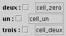
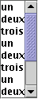
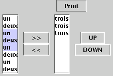
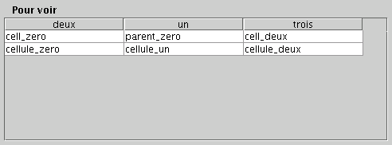

|
||||||||||
| PREV PACKAGE NEXT PACKAGE | FRAMES NO FRAMES | |||||||||
See:
Description
| Class Summary | |
| JBaseDeDonnees | A JBaseDeDonnes display the data of collector.data.Table:
JTabbedPane::this Right now, it uses 3 JTables corresponding to the related Table of BDD (parent, basic, complete). |
| JCell | A template for all JCellXXX. |
| JCellInt | A horizontal row made of label+check+rigid+JTextField. |
| JCellStr | A horizontal row made of label+check+rigid+JTextField. |
| JEnregistrement | Vertical row of JCell. |
| JHeaderChoice | A JHeaderChoice allow to choose an ordered set of Fields from a given set. |
| JHeaderList | JHeaderList is a kind of Scrollable JList. |
| JSearchedElement | A horizontal row made of a check box, the name of the field, the type of search and the pattern looked for. |
| JSearchOperator | An JSearchedOperator displays the type of search (OR or AND), a list of searchedPattend. |
| JTableData | A JTableData display the data of collector.data.Table:
The selectedEnregistrement is updated after every change in
the selection (mouse). |
| TableDataModel | A TableDataModel allow the use of Table as data for a JTable. |
Q : Quand on ajoute un élément dans JTable, la taille des colonnes est modifiée (souvent diminiuée).
Pas evident de gerer la taille des composants et aussi le fait qu'ils soient visibles, notamment dans les DialogEnditEnregistrement.
By default, in a JTable, columns can be moved without altering the TableModel.
In our case, we could either (1) prevent such reordering, (2) do nothing to
the internal Model or (3) change the Model as well (using a Listener).
-- We have chosen : (2).
JCellStr :
JEnregistrement : 
JHeader : 
JHeaderChoice : 
JTableData : 
|
||||||||||
| PREV PACKAGE NEXT PACKAGE | FRAMES NO FRAMES | |||||||||